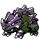

#111
Rhyhorn
GroundRock
Abilities: Rock Head, Reckless, Sheer Force
Base stats BST 345
HP80
Attack85
Defense95
Speed25
Sp. Atk30
Sp. Def30
Evolution
dbbw EVOLVE_LEVEL, 42, RHYDONLevel-up learnset
LevelMoveType
Lv. 1Tail WhipNormal
Lv. 1TackleNormal
Lv. 1Horn AttackNormal
Lv. 4Fury AttackNormal
Lv. 7Scary FaceNormal
Lv. 10BulldozeGround
Lv. 13StompNormal
Lv. 16Rock BlastRock
Lv. 22Take DownNormal
Lv. 28CrunchDark
Lv. 31Rock SlideRock
Lv. 34Double EdgeNormal
Lv. 37MegahornBug
Lv. 40EarthquakeGround
Lv. 50Stone EdgeRock
Lv. 60Horn DrillNormal